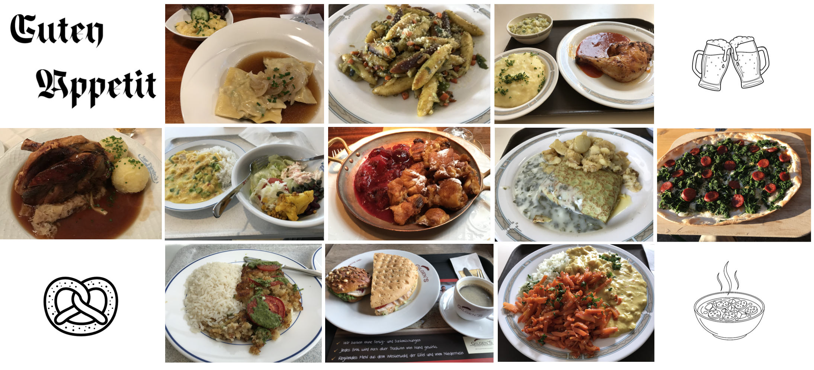

德式餐桌 At the German Table
Posted on 17 August, 2025
卡爾正用刀叉小心翼翼地切著披薩，每一塊都切得方正整齊。旁邊的克萊門斯則不浪費一點醬汁，他細心地用刀叉把盤子上的肉醬刮得乾乾淨淨，彷彿那盤子才剛從櫥櫃裡拿出來一樣。
* * *
說到德國食物，一般人腦海裡浮現的往往是烤香腸和德國豬腳。 在食堂裡，香腸更常見的是泡在湯裡的，而豬腳則鮮少出現。 更常見的主菜則是炸豬排（Schweinschnitzel）、匈牙利燉豬肉（Gulasch）、蘇黎世燉肉絲（Zürcher Geschnetzeltes）、或是炆豬頰（geschmorte Schweinebäckchen），旁邊再配上馬鈴薯、義大利麵或飯。 更豐富一點的有沙拉吧。常常有十幾種生菜、豆類、堅果與起司，任人自由搭配。 無論吃什麼，德國人都能在餐後喝上一杯咖啡，讓他們有精神在餐後直接開始工作。
正式一點的德國餐廳，選擇雖然更多一些，但與食堂相比差別不大。 這與在亞洲流行的「自助餐吃到飽」大不相同，琳瑯滿目的選擇與無限量的續盤，像是對豐盛的讚頌。 據說自助餐的源頭是維京人的慶功宴，後來傳入歐陸，再被東亞發揚光大。 不過，真正的自助餐吃到飽在德國卻極為少見。這些年裡，我只在山區的一間傳統餐廳遇過一次。 十幾道熱食排列在長桌上，價格卻與普通餐館差不多。真正令我驚訝的，不是餐點，而是客人的舉止：隔壁桌的人只端了一盤菜，就像在單點一樣，沒有再去拿第二輪。 對他們來說，一兩道菜已經足夠。他們更重視的是之後慢慢品嘗的酒或咖啡，享受時間本身的寧靜。 這樣的飲食習慣，透露出一種文化價值：有些單調，卻是節制與知足。與亞洲自助餐的「豐盛」與「多樣」相比，德國人似乎更強調「剛剛好」。
然而，即使在這樣的氛圍下，食物浪費依然存在。每天都有大量接近保存期限的食物從超市被丟棄。 我想起學生宿舍裡的「共享桌」和「共享冰箱」，常常堆滿即將過期的麵包與優格——大多是打工學生從超市帶回來的。 有時候，我也能撿到還散發香氣的麵包，心裡既覺得幸運，又隱隱感到無奈：如果不是這樣，這些食物大概就會直接被倒進垃圾桶裡。 當我們在餐桌上追求美味和飽足時，是否也該思考：該如何珍惜餐桌上與餐桌外的滋味呢？
* * *
餐後，卡爾外帶了一塊蘋果派，準備下午配著咖啡細細享用；克萊門斯和卡爾邊聊天邊走回實驗室。此時，剛下課的尤莉雅站在食堂門口，看著長長的人龍，嘆了口氣，轉身走向市中心，那裡的沙威瑪攤正等著她。

Karl was carefully cutting his pizza with knife and fork, each piece neat and square. Next to him, Clemens scraped every bit of sauce from his plate, so clean it looked as if it had just come out of the cupboard.
* * *
In the student canteen, sausages are more often found floating in soup, while the iconic pork knuckle is rarely seen. The main dishes are usually things like breaded pork schnitzel (Schweinschnitzel), Hungarian goulash (Gulasch), Zürich-style sliced meat (Zürcher Geschnetzeltes), or braised pork cheeks (geschmorte Schweinebäckchen), always accompanied by potatoes, pasta, or rice. For a more balanced meal, there is often a salad bar with a dozen types of greens, beans, nuts, and cheeses to mix freely. No matter what they eat, Germans often finish their lunch with a cup of coffee, ready to return to work straight after.
In a more formal German restaurant, the menu might look slightly broader, but the essence isn’t too different from the canteen. Compared to Asia, where “all-you-can-eat buffets” overflow with variety, Germany offers something else. In all my years there, aside from hotels and Asian restaurants, I only once encountered a buffet in a traditional restaurant in a mountainous area. The long table was laid with a dozen hot dishes, priced no higher than a normal meal. But what truly surprised me was the guests. At the table next to mine, people filled only a single plate, just as if they had ordered à la carte. There was no second round. For them, one or two dishes were enough. What mattered more was the slow enjoyment of a glass of wine or coffee afterward. This way of eating reveals something about cultural values: simple, perhaps a little monotonous, but also moderate and content. In contrast to Asia’s “abundance” and “variety,” German dining often emphasizes “just enough.”
Yet even within this culture of restraint, food waste still exists. Supermarkets throw away products that are near their expiry date every day. I was reminded of my student dormitory, where we had a “sharing table” and a communal fridge. Often you’d find nearly expired bread or yogurt left there—brought back by students working at supermarkets. Sometimes I picked up some bread rolls still fragrant and fresh, and I couldn’t help but feel two things at once: delight at the free treat, and sadness that countless similar items were likely discarded elsewhere. As we pursue flavor and fullness at the table, should we not also reflect on how to cherish the moments both at and beyond the table?
* * *
After the meal, Karl took a slice of apple pie to go, planning to enjoy it later with coffee; Clemens and Karl chatted as they walked back to the lab. At that moment, Julia, just out of class, stood at the canteen entrance. Seeing the long line, she sighed and turned toward the city center, where a Döner stand was waiting for her.